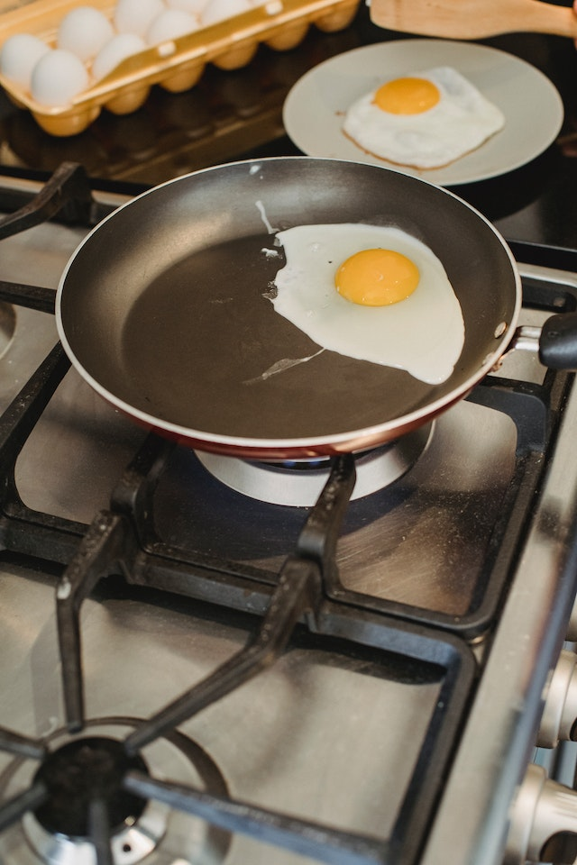

Ovo Frito

Descrição
Receita para fritar um ovo
Ingredientes
Instruções
- Ferva o azeite na frigideira
- Quebre a casca do ovo e coloque na frigideira (Não a casca do ovo e sim o que tem dentro)
- Cuida o ovo pra não queimar todo, em uns 3 minutos tá pronto
- Desligue a frigideira e coloca umas pitadas de sal pra dar um gosto
- Coloque o ovo em algum prato e come